<!DOCTYPE html>
<html lang="en">

<head>
  <meta charset="utf-8" />
  <title>Object Oriented Programming</title>
  <meta content="width=device-width, initial-scale=1.0" name="viewport" />
  <meta content="Content" name="keywords" />
  <meta content="Content" name="description" />


  <link rel="stylesheet" href="oops.css" />
  <link rel="stylesheet" href="oops-res.css">
  <style>
    .table .thead-dark th {
      color: #fff;
      background-color: #343a40;
      border-color: #454d55;
    }
  </style>

<!-- //--------------------------------------------------------------------------             -->
<!-- //--------------------------------------------------------------------------             -->
<!-- //------- Preoader Section ---------------------------------------------------------------             -->


<!DOCTYPE html>
<html lang="en">

<head>


    <style>

        body{
            background-color: black;
        }
        #loader {
            border: 12px solid #000000;
            border-radius: 50%;
            border-top: 12px solid #8c00ff;
            width: 70px;
            height: 70px;
            animation: spin 1s linear infinite;
        }

        .center {
            position: absolute;
            top: 0;
            bottom: 0;
            left: 0;
            right: 0;
            margin: auto;
        }

        @keyframes spin {
            100% {
                transform: rotate(360deg);
            }
        }
    </style>
</head>

<body>
    <div id="loader" class="center"></div>


    <script>
        document.onreadystatechange = function () {
            if (document.readyState !== "complete") {
                document.querySelector(
                    "body").style.visibility = "hidden";
                document.querySelector(
                    "#loader").style.visibility = "visible";
            } else {
                document.querySelector(
                    "#loader").style.display = "none";
                document.querySelector(
                    "body").style.visibility = "visible";
            }
        };
    </script>
</body>

</html>


<!-- //--------------------------------------------------------------------------             -->
<!-- //--------------------------------------------------------------------------             -->
<!-- //--------------------------------------------------------------------------             -->


<!-- //------------------------------------------------------------------- -->

  <header class="ups">

    <button id="back" onclick="window.history.back()">Back</button>
    
    Object Oriented Programming</header>

<!-- //------------------------------------------------------------------- -->


  <div id="tab-menu-div">
    <div class="tab">
      <button id="firsttab" class="tablinks" onclick="openTab(event, 'Account')">
        <div class="tab-button">
          <div class="">
            <p class="font-payment-tab-button-p">Introduction of OOPS</p>
          </div>
        </div>
      </button>

      <button class="tablinks" onclick="openTab(event, 'Replenish')">
        <div class="tab-button">
          <div class=" ">
            <p class="font-payment-tab-button-p">Encapsulation</p>
          </div>
        </div>
      </button>

      <button class="tablinks" onclick="openTab(event, 'Same-Day')">
        <div class="tab-button">
          <div class=" ">
            <p class="font-payment-tab-button-p">Inheritance</p>
          </div>
        </div>
      </button>

      <button class="tablinks" onclick="openTab(event, 'Orders')">
        <div class="tab-button">
          <div class="">
            <p class="font-payment-tab-button-p">Polymorphism</p>
          </div>
        </div>
      </button>

      <button class="tablinks" onclick="openTab(event, 'Subscriptions')">
        <div class="tab-button">
          <div class="">
            <p class="font-payment-tab-button-p">Abstraction</p>
          </div>
        </div>
      </button>


    </div>
    <div id="Account" class="tabcontent" style="display: none">
      <div class="tab-content-heading">Introduction of Object Oriented Programming</div>
      <div id="hero-content">
        <p>As the name suggests, Object-Oriented Programming or OOPs refers to languages that use objects in
          programming. Object-oriented programming aims to implement real-world entities like inheritance, hiding,
          polymorphism, etc in programming. The main aim of OOP is to bind together the data and the functions that
          operate on them so that no other part of the code can access this data except that function.</p>
        <h3>OOPs Concepts:</h3>
        <ul>
          <li>Class</li>
          <li>Objects</li>
          <li>Data Abstraction
          </li>
          <li>Encapsulation</li>
          <li>Inheritance</li>
          <li>Polymorphism</li>
          <li>Dynamic Binding</li>
          <li>Message Passing</li>
        </ul>
        <h3>1. Class:</h3>
        <p>A class is a user-defined data type. It consists of data members and member functions, which can be accessed
          and used by creating an instance of that class. It represents the set of properties or methods that are common
          to all objects of one type. A class is like a blueprint for an object. </p>
        <p>For Example: Consider the Class of Cars. There may be many cars with different names and brands but all of
          them will share some common properties like all of them will have 4 wheels, Speed Limit, Mileage range, etc.
          So here, Car is the class, and wheels, speed limits, mileage are their properties.</p>
        <h3>2. Object: </h3>
        <p>It is a basic unit of Object-Oriented Programming and represents the real-life entities. An Object is an
          instance of a Class. When a class is defined, no memory is allocated but when it is instantiated (i.e. an
          object is created) memory is allocated. An object has an identity, state, and behavior. Each object contains
          data and code to manipulate the data. Objects can interact without having to know details of each others data
          or code, it is sufficient to know the type of message accepted and type of response returned by the objects.
        </p>
        <p>For example “Dog” is a real-life Object, which has some characteristics like color, Breed, Bark, Sleep, and
          Eats.</p>
        <h3>3. Data Abstraction: </h3>
        <p>Data abstraction is one of the most essential and important features of object-oriented programming. Data
          abstraction refers to providing only essential information about the data to the outside world, hiding the
          background details or implementation. Consider a real-life example of a man driving a car. The man only knows
          that pressing the accelerators will increase the speed of the car or applying brakes will stop the car, but he
          does not know about how on pressing the accelerator the speed is increasing, he does not know about the inner
          mechanism of the car or the implementation of the accelerator, brakes, etc in the car. This is what
          abstraction is.</p>
        <h3>4. Encapsulation: </h3>
        <p>Encapsulation is defined as the wrapping up of data under a single unit. It is the mechanism that binds
          together code and the data it manipulates. In Encapsulation, the variables or data of a class are hidden from
          any other class and can be accessed only through any member function of their class in which they are
          declared. As in encapsulation, the data in a class is hidden from other classes, so it is also known as
          data-hiding.</p>
        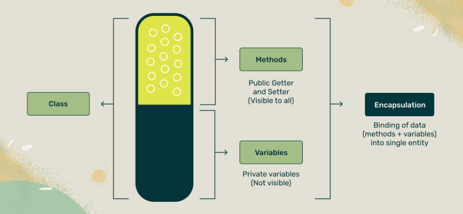
        <p>Consider a real-life example of encapsulation, in a company, there are different sections like the accounts
          section, finance section, sales section, etc. The finance section handles all the financial transactions and
          keeps records of all the data related to finance. Similarly, the sales section handles all the sales-related
          activities and keeps records of all the sales. Now there may arise a situation when for some reason an
          official from the finance section needs all the data about sales in a particular month. In this case, he is
          not allowed to directly access the data of the sales section. He will first have to contact some other officer
          in the sales section and then request him to give the particular data. This is what encapsulation is. Here the
          data of the sales section and the employees that can manipulate them are wrapped under a single name “sales
          section”.</p>
        <h3>5. Inheritance: </h3>
        <p>Inheritance is an important pillar of OOP(Object-Oriented Programming). The capability of a class to derive
          properties and characteristics from another class is called Inheritance. When we write a class, we inherit
          properties from other classes. So when we create a class, we do not need to write all the properties and
          functions again and again, as these can be inherited from another class that possesses it. Inheritance allows
          the user to reuse the code whenever possible and reduce its redundancy.</p>
        
        <h3>6. Polymorphism: </h3>
        <p>The word polymorphism means having many forms. In simple words, we can define polymorphism as the ability of
          a message to be displayed in more than one form. For example, A person at the same time can have different
          characteristics. Like a man at the same time is a father, a husband, an employee. So the same person posses
          different behavior in different situations. This is called polymorphism.</p>
        
        <h3>7. Dynamic Binding:</h3>
        <p>In dynamic binding, the code to be executed in response to the function call is decided at runtime. Dynamic
          binding means that the code associated with a given procedure call is not known until the time of the call at
          run time. Dynamic Method Binding One of the main advantages of inheritance is that some derived class D has
          all the members of its base class B. Once D is not hiding any of the public members of B, then an object of D
          can represent B in any context where a B could be used. This feature is known as subtype polymorphism.</p>
        <h3>8. Message Passing:</h3>
        <p style="color: white;">
          It is a form of communication used in object-oriented programming as well as parallel programming. Objects
        communicate with one another by sending and receiving information to each other. A message for an object is a
        request for execution of a procedure and therefore will invoke a function in the receiving object that generates
        the desired results. Message passing involves specifying the name of the object, the name of the function, and
        the information to be sent.
        </p>
        <h3>Why do we need object-oriented programming</h3>
        <ul>
          <li>To make the development and maintenance of projects more effortless.
          </li>
          <li>To provide the feature of data hiding that is good for security concerns.
          </li>
          <li>We can solve real-world problems if we are using object-oriented programming.
          </li>
          <li>It ensures code reusability.
          </li>
          <li>It lets us write generic code: which will work with a range of data, so we dont have to write basic stuff
            over and over again.</li>
        </ul>
      </div>

    </div>

    <div id="Replenish" class="tabcontent" style="display: none">
      <div class="tab-content-heading">Encapsulation</div>
      <div id="hero-content">
        <h3>Encapsulation is defined as the wrapping up of data under a single unit. It is the mechanism that binds
          together code and the data it manipulates. Another way to think about encapsulation is, that it is a
          protective shield that prevents the data from being accessed by the code outside this shield. </h3>
        <ul>
          <li>
            Technically in encapsulation, the variables or data of a class is hidden from any other class and can be
            accessed only through any member function of its own class in which it is declared.
          </li>
          <li>
            As in encapsulation, the data in a class is hidden from other classes using the data hiding concept which is
            achieved by making the members or methods of a class private, and the class is exposed to the end-user or
            the world without providing any details behind implementation using the abstraction concept, so it is also
            known as a combination of data-hiding and abstraction.
          </li>
          <li>
            Encapsulation can be achieved by Declaring all the variables in the class as private and writing public
            methods in the class to set and get the values of variables.
          </li>
          <li>
            It is more defined with the setter and getter method.
          </li>
        </ul>
        <h3>Advantages of Encapsulation: </h3>
        <ul>
          <li>
            Data Hiding: it is a way of restricting the access of our data members by hiding the implementation details.
            Encapsulation also provides a way for data hiding. The user will have no idea about the inner implementation
            of the class. It will not be visible to the user how the class is storing values in the variables. The user
            will only know that we are passing the values to a setter method and variables are getting initialized with
            that value.
          </li>
          <li>
            Increased Flexibility: We can make the variables of the class read-only or write-only depending on our
            requirement. If we wish to make the variables read-only then we have to omit the setter methods like
            setName(), setAge(), etc. from the above program or if we wish to make the variables write-only then we have
            to omit the get methods like getName(), getAge(), etc. from the above program
          </li>
          <li>
            Reusability: Encapsulation also improves the re-usability and is easy to change with new requirements.
          </li>
          <li>
            Testing code is easy: Encapsulated code is easy to test for unit testing.
          </li>
        </ul>
        

        <header id="code">
          <textarea name="codee" id="codee">

    // Program to calculate the area of a rectangle
    #include <iostream>
    using namespace std;

    class Rectangle {
      public:
        // Variables required for area calculation
        int length;
        int breadth;

        // Constructor to initialize variables
        Rectangle(int len, int brth) : length(len), breadth(brth) {}

        // Function to calculate area
        int getArea() {
          return length * breadth;
        }
    };


    int main() {
      // Create object of Rectangle class
      Rectangle rect(8, 6);

      // Call getArea() function
      cout << "Area = " << rect.getArea();

      return 0;
    }

    // Output : Area = 48

          </textarea>
        </header>
        
      </div>
    </div>
    <div id="Same-Day" class="tabcontent" style="display: none">
      <div class="tab-content-heading">Inheritance</div>
      <div id="hero-content">
        <h3>The capability of a class to derive properties and characteristics from another class is called Inheritance. Inheritance is one of the most important features of Object Oriented Programming in C++. In this article, we will learn about inheritance in C++, its modes and types along with the information about how it affects different properties of the class.</h3>
        <ul>
          <li>class: keyword to create a new class</li>
          <li>derived_class_name : name of the new class, which will inherit the base class</li>
          <li>access-specifier: Specifies the access mode which can be either of private, public or protected. If neither is specified, private is taken as default.</li>
          <li>base-class-name: name of the base class.</li>

        </ul>
        <h3>Example for Inheritance : </h3>
        <ul>
          <li>Inheritance is a technique of modelling real-world relationships, and OOP is all about real-world objects. Here's an example: a car, a bus, and a bicycle all fall under the umbrella term "vehicle." That is, they have inherited the attributes of the vehicle class, implying that they are all utilised for transportation.</li>

        </ul>
        <h3>
          Modes of Inheritance in C++ : 
        </h3>
        <p>
          Mode of inheritance controls the access level of the inherited members of the base class in the derived class. In C++, there are 3 modes of inheritance:
        </p>
        <ul>
          <li>Public Mode</li>
          <li>Protected Mode</li>
            <li>Private Mode</li>
        </ul>

        <p><span style="color: rgb(128, 0, 255)
        ;">Public Inheritance Mode :</span> 
          If we derive a subclass from a public base class. Then the public member of the base class will become public in the derived class and protected members of the base class will become protected in the derived class.</p>

          <p><span style="color: rgb(128, 0, 255)
        ;">Protected Inheritance Mode :</span>If we derive a subclass from a Protected base class. Then both public members and protected members of the base class will become protected in the derived class</p>

        <p><span style="color: rgb(128, 0, 255);">Private Inheritance Mode : </span>If we derive a subclass from a Private base class. Then both public members and protected members of the base class will become private in the derived class. They can only be accessed by the member functions of the derived class.

          Private mode is the default mode that is applied when we don’t specify any mode.</p>
        </h3>

          <h3>Types of Inheritance : </h3>
          <p>The inheritance can be classified on the basis of the relationship between the derived class and the base class. In C++, we have 5 types of inheritances:</p>

          <ul>
            <li>Single inheritance</li>
            <li>Multilevel inheritance</li>
            <li>Multiple inheritance</li>
            <li>Hierarchical inheritance</li>
            <li>Hybrid inheritance</li>
          
          </ul>

          <h3>1. Single Inheritance</h3>
          <p>In single inheritance, a class is allowed to inherit from only one class. i.e. one base class is inherited by one derived class only.</p>
          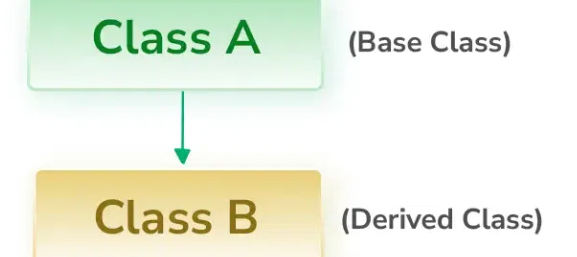
          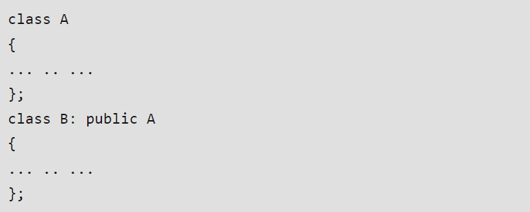

          
          <h3>2. Multilevel Inheritance</h3>
          <p>In this type of inheritance, a derived class is created from another derived class and that derived class can be derived from a base class or any other derived class. There can be any number of levels.</p>
          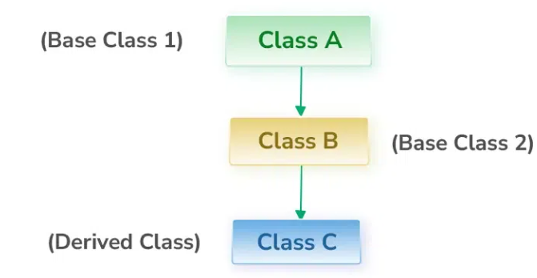
          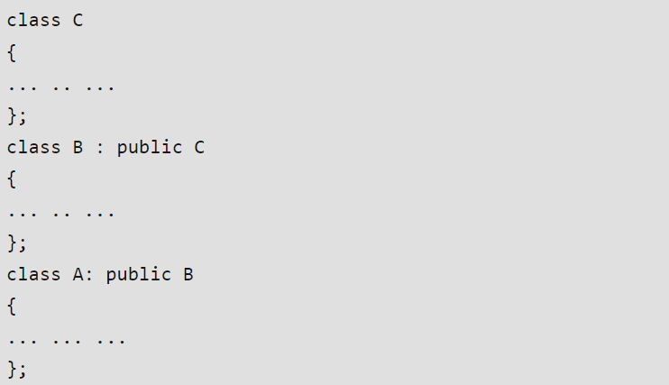


          <h3>3. Hierarchical Inheritance</h3>
          <p>In this type of inheritance, more than one subclass is inherited from a single base class. i.e. more than one derived class is created from a single base class.</p>
          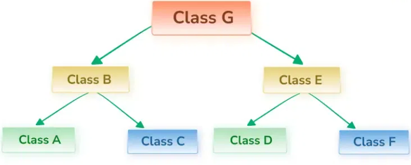
          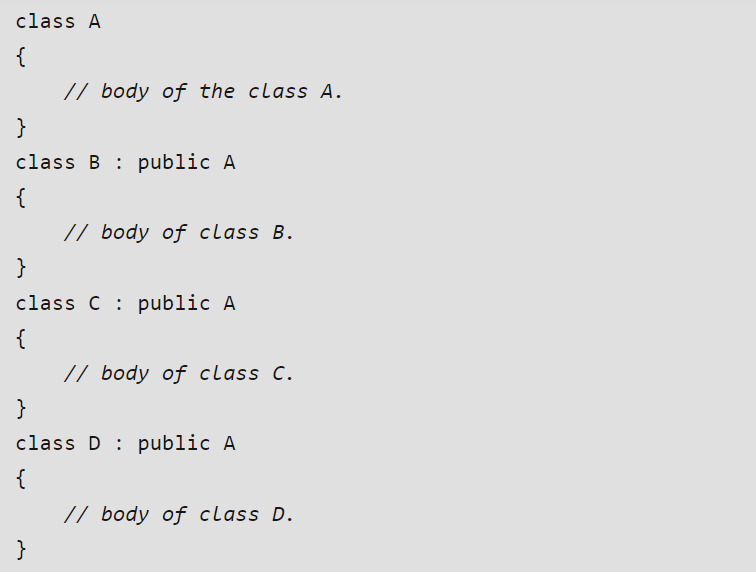


          <h3>4. Multiple Inheritance</h3>
          <p>Multiple Inheritance is a feature of C++ where a class can inherit from more than one class. i.e one subclass is inherited from more than one base class.</p>
          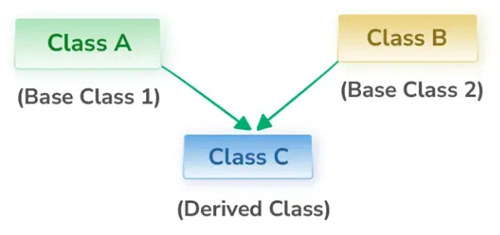
          


          <h3>5. Hybrid Inheritance</h3>
          <p>Hybrid Inheritance is implemented by combining more than one type of inheritance. For example: Combining Hierarchical inheritance and Multiple Inheritance will create hybrid inheritance in C++</p>
          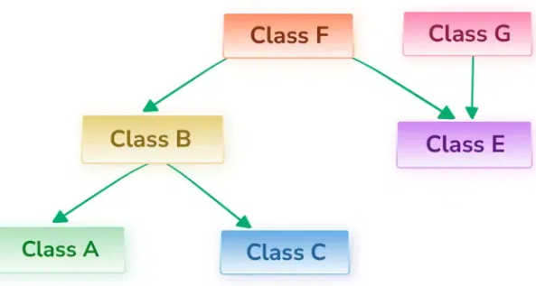
          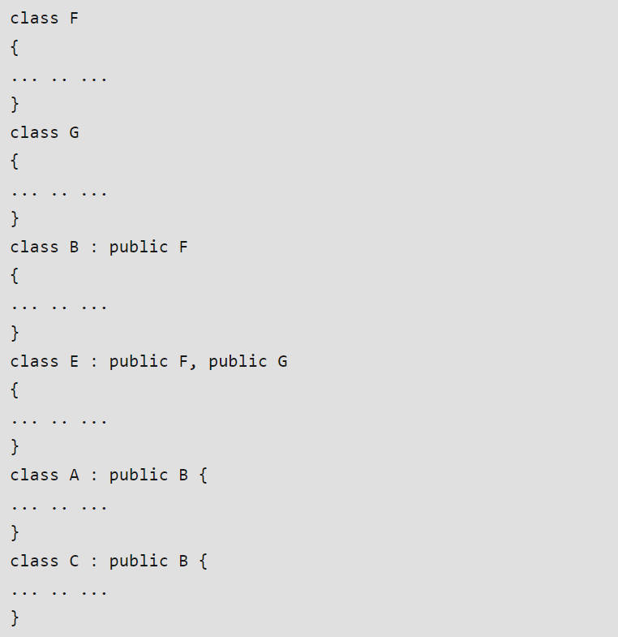

          <header id="code">
            <textarea name="codee" id="codee">

    // C++ program to demonstrate inheritance

    #include <iostream>
    using namespace std;

    // base class
    class Animal {

      public:
        void eat() {
            cout << "I can eat!" << endl;
        }

        void sleep() {
            cout << "I can sleep!" << endl;
        }
    };

    // derived class
    class Dog : public Animal {
 
      public:
        void bark() {
            cout << "I can bark! Woof woof!!" << endl;
        }
    };

    int main() {
        // Create object of the Dog class
        Dog dog1;

        // Calling members of the base class
        dog1.eat();
        dog1.sleep();

        // Calling member of the derived class
        dog1.bark();

        return 0;
    }

            </textarea>
          </header>

      </div>
    </div>

    <div id="Orders" class="tabcontent" style="display: none">
      <div class="tab-content-heading">Polymorphism</div>
        <div id="hero-content">
          <h3>The word polymorphism means having many forms. In simple words, we can define polymorphism as the ability of a message to be displayed in more than one form.</h3>
          <p>A person at the same time can have different characteristics. Like a man at the same time is a father, a husband, an employee. So the same person possesses different behavior in different situations. This is called polymorphism. </p>

          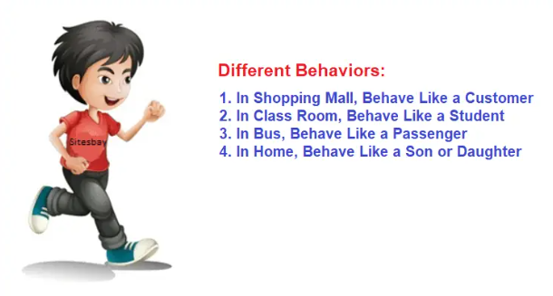

          <p>Polymorphism is considered one of the important features of Object-Oriented Programming. Polymorphism allows us to perform a single action in different ways. In other words, polymorphism allows you to define one interface and have multiple implementations. The word “poly” means many and “morphs” means forms, So it means many forms.</p>
          
          <h3>Types of polymorphism : </h3>
          <p>polymorphism mainly divided into two types: </p>
          <ul>
            <li>Compile-time Polymorphism</li>
            <li>Runtime Polymorphism</li>
          </ul>


          <h3>Type 1: Compile-time polymorphism</h3>
          <p>It is also known as static polymorphism. This type of polymorphism is achieved by function overloading or operator overloading. </p>
          <p></p>
          <h3>Subtypes of Compile-time Polymorphism:</h3>
          <ol>
            <li>Function Overloading: When there are multiple functions with the same name but different parameters, then the functions are said to be overloaded, hence this is known as Function Overloading. Functions can be overloaded by changing the number of arguments or/and changing the type of arguments. In simple terms, it is a feature of object-oriented programming providing many functions that have the same name but distinct parameters when numerous tasks are listed under one function name. There are certain Rules of Function Overloading that should be followed while overloading a function.

            </li>
            <li>Operator Overloading: C++ has the ability to provide the operators with a special meaning for a data type, this ability is known as operator overloading. For example, we can make use of the addition operator (+) for string class to concatenate two strings. We know that the task of this operator is to add two operands. So a single operator ‘+’, when placed between integer operands, adds them and when placed between string operands, concatenates them. </li>
          </ol>


          <h3>Type 2: Runtime Polymorphism</h3>
          <p>This type of polymorphism is achieved by Function Overriding. Late binding and dynamic polymorphism are other names for runtime polymorphism. The function call is resolved at runtime in runtime polymorphism. In contrast, with compile time polymorphism, the compiler determines which function call to bind to the object after deducing it at runtime.</p>
          

          <h3>Advantages of Polymorphism </h3>
          <ol>
            <li>Increases code reusability by allowing objects of different classes to be treated as objects of a common class.</li>
            <li>Improves readability and maintainability of code by reducing the amount of code that needs to be written and maintained.</li>
            <li>Supports dynamic binding, enabling the correct method to be called at runtime, based on the actual class of the object.</li>
            <li>Enables objects to be treated as a single type, making it easier to write generic code that can handle objects of different types.</li>
          </ol>
          <p></p>

          <header id="code">
            <textarea name="codee" id="codee">

    // Function Overloading
    // C++ program to overload sum() function

    #include <iostream>
    using namespace std;

    // Function with 2 int parameters
    int sum(int num1, int num2) {
        return num1 + num2;
    }

    // Function with 2 double parameters
    double sum(double num1, double num2) {
        return num1 + num2;
    }

    // Function with 3 int parameters
    int sum(int num1, int num2, int num3) {
        return num1 + num2 + num3;
    }


    int main() {
        // Call function with 2 int parameters
        cout << "Sum 1 = " << sum(5, 6) << endl;

        // Call function with 2 double parameters
        cout << "Sum 2 = " << sum(5.5, 6.6) << endl;

        // Call function with 3 int parameters
        cout << "Sum 3 = " << sum(5, 6, 7) << endl;

        return 0;
    }

    //Output : 
      Sum 1 = 11
      Sum 2 = 12.1
      Sum 3 = 18


    // Operator Overloading
    // C++ program to overload ++ when used as prefix

    #include <iostream>
    using namespace std;

    class Count {
      private:
        int value;

      public:

        // Constructor to initialize count to 5
        Count() : value(5) {}

        // Overload ++ when used as prefix
        void operator ++() {
            value = value + 1;
        }

        void display() {
            cout << "Count: " << value << endl;
        }
    };


    int main() {
        Count count1;

        // Call the "void operator ++()" function
        ++count1;

        count1.display();
        return 0;
    }

    // Output : 
      Count: 6

    // Function Overriding
    // C++ program to demonstrate function overriding

    #include <iostream>
    using namespace std;

    class Base {
      public:
        virtual void print() {
            cout << "Base Function" << endl;
        }
    };

    class Derived : public Base {
      public:
        void print() {
            cout << "Derived Function" << endl;
        }
    };

    int main() {
        Derived derived1;

        // Call print() function of Derived class
        derived1.print();

        return 0;
    }

    //Output : 
      Derived Function


    // Virtual Function  
    // C++ program to demonstrate the use of virtual functions

    #include <iostream>
    using namespace std;

    class Base {
      public:
        virtual void print() {
            cout << "Base Function" << endl;
        }
    };

    class Derived : public Base {
      public:
        void print() {
            cout << "Derived Function" << endl;
        }
    };


    int main() {
        Derived derived1;

        // pointer of Base type that points to derived1
        Base* base1 = &derived1;

        // calls member function of Derived class
        base1->print();

        return 0;
    }

    //Output : 
      Derived Function

            </textarea>
          </header>

        </div>
    </div>


    <div id="Subscriptions" class="tabcontent" style="display: none">
      <div class="tab-content-heading">Abstraction</div>
      <div id="hero-content">
        <h3>Data abstraction is one of the most essential and important features of object-oriented programming in C++. Abstraction means displaying only essential information and ignoring the details. Data abstraction refers to providing only essential information about the data to the outside world, ignoring unnecessary details or implementation.</h3>

        <p>Consider a real-life example of a man driving a car. The man only knows that pressing the accelerators will increase the speed of a car or applying brakes will stop the car, but he does not know how on pressing the accelerator the speed is actually increasing, he does not know about the inner mechanism of the car or the implementation of the accelerator, brakes, etc in the car. This is what abstraction is.</p>

        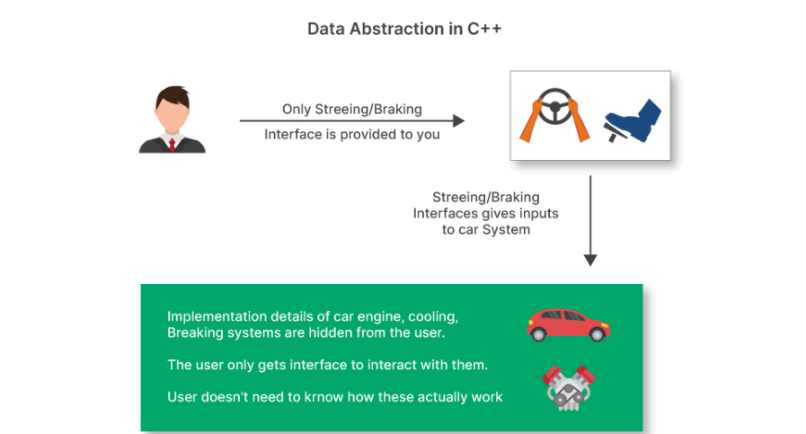

        <h3>Types of Abstraction : </h3>

        <ol>
          <li><span style="color: rgb(128, 0, 255);">Data abstraction –</span> This type only shows the required information about the data and ignores unnecessary details.</li>
          <li><span style="color: rgb(128, 0, 255);">Control Abstraction – </span>This type only shows the required information about the implementation and ignores unnecessary details.
          </li>
        </ol>

        <h3>Abstraction using Classes </h3>
        <p>We can implement Abstraction in C++ using classes. The class helps us to group data members and member functions using available access specifiers. A Class can decide which data member will be visible to the outside world and which is not. </p>

        <h3>Abstraction in Header files </h3>
        <p>One more type of abstraction in C++ can be header files. For example, consider the pow() method present in math.h header file. Whenever we need to calculate the power of a number, we simply call the function pow() present in the math.h header file and pass the numbers as arguments without knowing the underlying algorithm according to which the function is actually calculating the power of numbers.</p>
        
        <h3>Abstraction using Access Specifiers</h3>
        <p>Access specifiers are the main pillar of implementing abstraction in C++. We can use access specifiers to enforce restrictions on class members. For example:</p>

        <ol>
          <li>Members declared as public in a class can be accessed from anywhere in the program.</li>
          <li>Members declared as private in a class, can be accessed only from within the class. They are not allowed to be accessed from any part of the code outside the class.</li>
        </ol>
        
        <h3>Advantages of Abstraction</h3>
        <ol>
          <li>It reduces the complexity of viewing things.
          </li>
          <li>Avoids code duplication and increases reusability.
          </li>
          <li>Helps to increase the security of an application or program as only essential details are provided to the user.</li>
          <li>It improves the maintainability of the application. 
          </li>
          <li>It improves the modularity of the application. 
          </li>
          <li>The enhancement will become very easy because without affecting end-users we can able to perform any type of changes in our internal system.</li>
          <li>Improves code reusability and maintainability.
          </li>
          <li>Hides implementation details and exposes only relevant information.
          </li>
          <li>Provides a clear and simple interface to the user.
          </li>
          <li>Increases security by preventing access to internal class details.
          </li>
          <li>Supports modularity, as complex systems can be divided into smaller and more manageable parts.</li>
        </ol>


      </div>
    </div>

    
  </div>


  <a href="#" class="btn btn-lg btn-primary rounded-0 btn-lg-square back-to-top"><i
      class="fa fa-angle-double-up"></i></a>

  <script src="oops.js"></script>
</body>

</html>